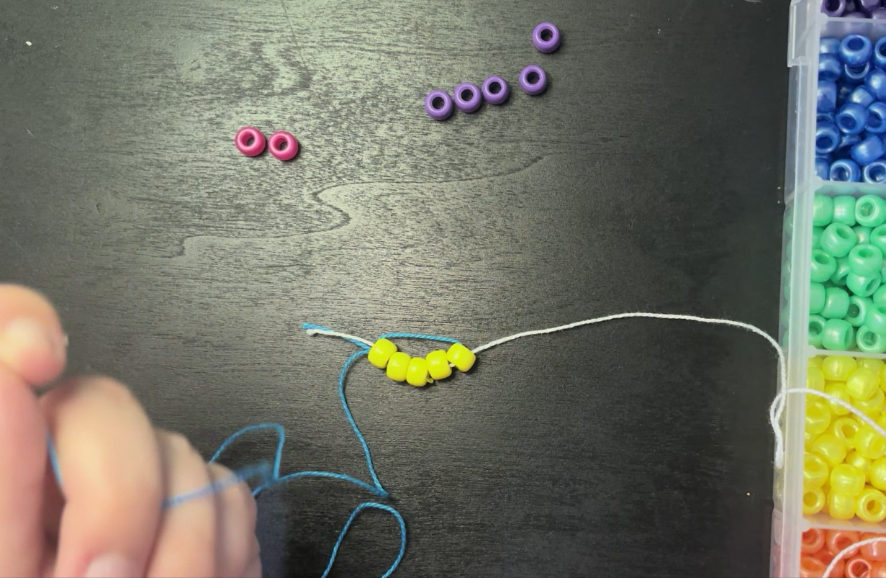
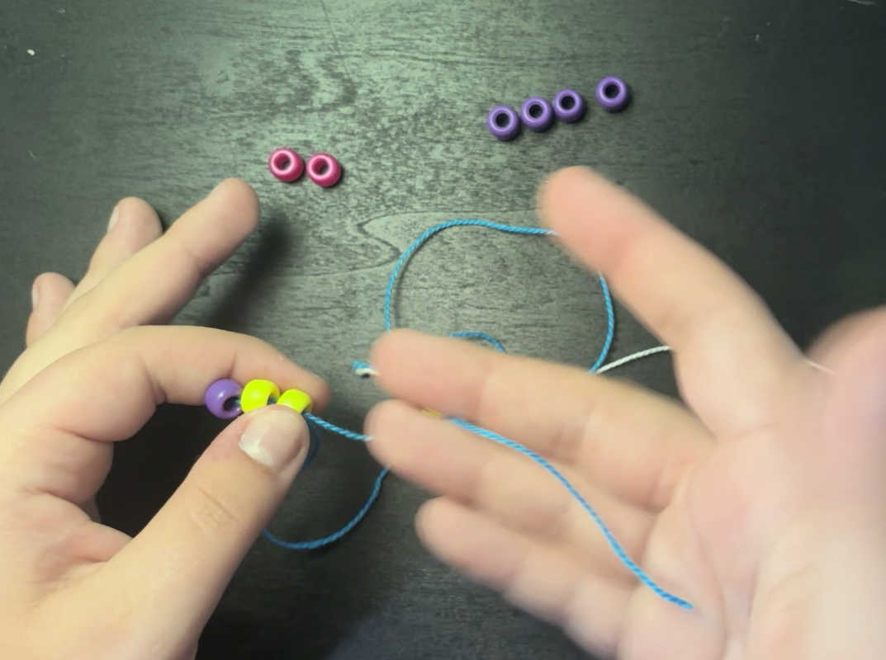

Take two strings of different color, both roughly forearm length. Tie their ends together, leaving two loose ends of seperate colors to work with. Lay it out flat in front of you.

...
...
...
...
Take two strings of different color, both roughly forearm length. Tie their ends together, leaving two loose ends of seperate colors to work with. Lay it out flat in front of you.
Place 5 yellow beads on the left string. Thread the right string through all beads heading the opposite way. Grab both ends of string and pull until all beads are centered under the initial knot.
Take the left string, place two yellow beads and one purple bead on it. Loop the left string around the purple bead, thread it through both yellow beads heading the opposite way to which the string was first inserted. Then hold the beads in your left hand, using your right hand to pull the tail end of the string towards the bead animal's body until it's ear is flush with the first row. Repeat for the right string.
Time to add the eyes! Place one yellow bead onto the left string. Then place one purple bead, two yellow beads, and another purple bead on the same string. Next, place a yellow bead onto the string. Take the string on the right and thread it through all of the beads on the left string so that the two tail ends of string are on opposite sides. Then, grab one string tail in each hand and pull until beads are centered below the head and ears.

Using the same threading process as in Step 4, place one pink bead, then two yellow, one purple, then two yellow, and one pink bead onto the left string. Thread the right string through the opposite way, grab a string in either hand, and pull until bead row is centered.

Take four beads and place them on the left string. Thread the right string through all beads heading the opposite direction. Grab a string end in either hand, pull until beads are centered below the head. Repeat this 2 more times for a total of 3 rows of 4 yellow beads.

You are all done! Congrats on finishing the pattern. Now that you've finished, your bead "Pikachu" should look like the one on the right. If you've gotten the pattern down expertly, you can always try to make it again in a different color or try a harder pattern!